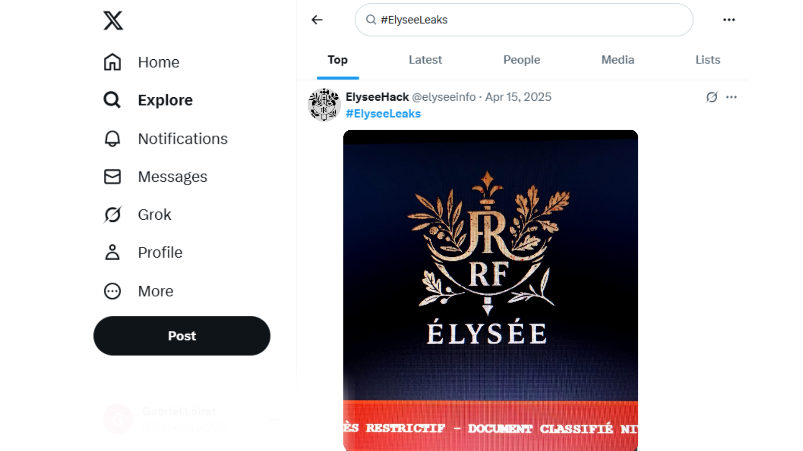

Une liste noire de journalistes à l'Élysée ? L'ombre d'un scandale...
La fuite troublante d’un site gouvernemental confidentiel
Ce mercredi 30 avril, une page web nommé ElyseeObservation-JN25 a été découverte par certains internautes en parcourant le site officiel de l'Élysée.
Cette page affiche une liste confidentielle issue de l’Élysée contenant des noms d’une trentaine de journalistes (mais seulement cinq sont visibles, le gouvernement prévenu en supprime le contenu progressivement), accompagnés d’informations sur leur influence et leur attitude envers le gouvernement.
Des réactions officielles prudentes
Le gouvernement, contacté par nos soins, s’est contenté de parler de “rumeurs sans fondement”. Pourtant, l’apparente authenticité du site internet, ainsi que la qualité de sa mise en forme, interrogent. Face à cette fuite, les autorités préférèrent garder le silence et détruire toutes traces du contenu de cette liste.
“Je ne suis pas surpris. On nous classe, on nous surveille… C’est la suite logique.” — Journaliste anonyme
Une origine encore inconnue
L’origine de la fuite reste floue, mais certains experts en cybersécurité affirment que le fichier aurait été exfiltré depuis un réseau interne de l’Élysée par un lanceur d’alerte.
“Les métadonnées suggèrent une source gouvernementale, mais sans vérification formelle, on reste dans l’ombre”, confie un analyste sous couvert d’anonymat.
Une affaire à suivre
Pour le moment, aucun média national ne s’est saisi officiellement de l’affaire. Mais de nombreux internautes demandent des explications.
Commentaires
Lucie · 4 mai 2025
Ce genre de fuite ne peut pas être ignoré. C’est effrayant de savoir ce que peut faire l'Elysée derrière notre dos. La liberté de la presse en prend un coup… #ElyseeLeaks
Marc · 2 mai 2025
Comment on peut accepter ça ? Des journalistes surveillés comme ça, c’est de la pure censure déguisée. La démocratie est en danger...